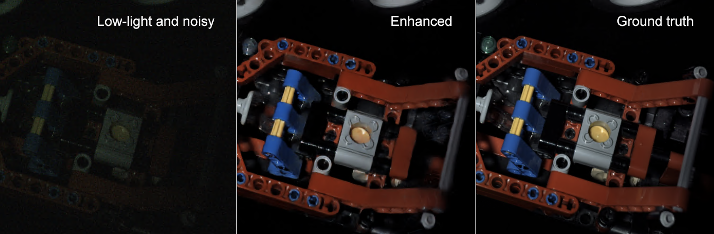

Production Workflows for Low-light Environments
AI-based Image Processing and Computer Vision



The human visual system operates using various opponent processes, present in both the retina and visual cortex. These processes heavily rely on distinctions in color, luminance, or motion to trigger salient reactions. Contrast, which refers to differences in luminance and/or color that enable the differentiation of objects, plays a crucial role in subjectively evaluating image quality. Images and videos captured in low-light conditions often exhibit poor quality and visibility due to limitations in shutter angles, high ISO resulting in noise, and spectral biasing toward blue. Traditional enhancement techniques tend to wash out details, flatten the appearance, and amplify noise.
This project aims to develop and validate a perceptually inspired deep learning framework for joint restoration of noisy, low light content (targeting natural history filmmaking) ensuring temporal consistency in terms of colour, luminance and motion.
Research team
Core
- N. Anantrasirichai and D.R. Bull: Lead academics
- Alexandra Malyugina: Researcher on low-light image denoising [Project page] [Paper]
- Duolikun Danier: Researcher on low-light video enhancement
- Crispian Morris: PhD on low-ight autofocus for advanced wildlife coverage (with BBC R&D)
- Rachel Lin: PhD on low-light video enhancement
- Joanne Lin: PhD on segmentation and object tracking in low-light environment
Undergrad/Postgrad projects
Downloads
Publications
- Topological Loss Function for Image Denoising on a new BVI-lowlight Dataset. A. Malyugina, N. Anantrasirichai, and D. Bull. Signal Processing. 2023. [PDF]
- Contextual colorization and denoising for low-light ultra high resolution sequences. N. Anantrasirichai and D. Bull. In Proceedings of the IEEE International Conference on Image Processing. 2021 [PDF] [Project page]
Datasets
Related research
Related publications from VI-Lab
- Artificial intelligence in the creative industries: A review. N Anantrasirichai and D R Bull, Artif Intell Rev 55, 2022
- ST-MFNet Mini: Knowledge distillation-driven frame interpolation. C Morris, D Danier, F Zhang, N Anantrasirichai, D R Bull. IEEE International Conference on Image Processing. 2023